# Complementarity Summary ## Focus pairs @ K=5 - **Proposed vs Qwen3-VL-Rerank-ImgCap+Link**: miss_jaccard=0.4464, rescue Proposed->Qwen3-VL-Rerank-ImgCap+Link=18, rescue Qwen3-VL-Rerank-ImgCap+Link->Proposed=13, kappa=0.3348 - **Proposed vs Proposed-v2**: miss_jaccard=0.66, rescue Proposed->Proposed-v2=10, rescue Proposed-v2->Proposed=7, kappa=0.6367 - **Proposed vs Layout-Order**: miss_jaccard=0.5536, rescue Proposed->Layout-Order=12, rescue Layout-Order->Proposed=13, kappa=0.47 - **Proposed-v2 vs Qwen3-VL-Rerank-ImgCap+Link**: miss_jaccard=0.5, rescue Proposed-v2->Qwen3-VL-Rerank-ImgCap+Link=14, rescue Qwen3-VL-Rerank-ImgCap+Link->Proposed-v2=12, kappa=0.4348 ## Union IR - **Proposed**: IR@3=0.400, IR@4=0.495, IR@5=0.547, IR@6=0.600, IR@7=0.621 - **Qwen3-VL-Rerank-ImgCap+Link**: IR@3=0.432, IR@4=0.547, IR@5=0.600, IR@6=0.642, IR@7=0.695 - **Proposed+QwenLink**: IR@3=0.600, IR@4=0.695, IR@5=0.737, IR@6=0.789, IR@7=0.810 ## Shared hard cases @ K=5 (miss>=3 primary methods) - Count: 42 - 2016_G_A194.pdf-b86a... | 图12二分法流程示意图 | miss=5 - 2016_G_A433.pdf-ace5... | 图10 考虑水流力的情况下受力示意图 | miss=5 - 2017_G_A156.pdf-526d... | 图12附件3介质最终重建图像 | miss=5 - 2017_G_B104.pdf-435f... | 图10 附件三任务点分布情况 | miss=5 - 2017_G_B154.pdf-6b29... | 图14各个任务点处的行动力消耗 | miss=5 - 2017_G_B447.pdf-bba1... | 图33不合理打包（左），合理打包（右） | miss=5 - 2023_G_A092.pdf-5db8... | 图9求解入射遮挡区域的流程图 | miss=5 - 2023_G_A127.pdf-c7af... | 图7:锥形光线离散化示意图 | miss=5
# Ablation Module Summary Reference full method: FullClusterAdd ## Drop-one @ K=5 (Rescue / Harm / Net) - **P_layout**: rescue=19, harm=7, net=12 - **S_link**: rescue=18, harm=10, net=8 - **LocalWindow**: rescue=18, harm=10, net=8 - **P_type**: rescue=4, harm=1, net=3 - **ClusterPrior**: rescue=3, harm=3, net=0 ## Incremental first-hit @ K=5 - DirectOnly: 43 - never: 21 - Direct+Link+Layout: 15 - Direct+Link: 12 - LG-JSSF+ClusterAdd: 2 - Direct+Link+Layout+Type: 2
# Union Pool Overlap Summary ## Dynamic budget @ K=6 - **Proposed+Qwen+Layout**: actual_budget median=10.0, mean=10.19, range=[5, 17], compression=0.556, pool_gt_recall=0.821, mean_pool_jaccard=0.456 - **PRIMARY_ALL_9**: actual_budget median=15.0, mean=14.55, range=[5, 31], compression=0.278, pool_gt_recall=0.926, mean_pool_jaccard=0.427 ## Quadrant counts @ K=6 - **Proposed+Qwen+Layout**: Q2_consensus_hit=18, Q3_complementary=13 - **PRIMARY_ALL_9**: Q2_consensus_hit=14, Q3_complementary=17 ## Representative papers (Q3 complementary / Q4 dispersed failure) ### Proposed+Qwen+Layout — Q3_complementary - 2017_G_A156.pdf-526d4bc0-c50... | overlap=0.127, gain=0.333, actual_budget=14, pool_recall=0.667 - 2017_G_B447.pdf-bba1d9f9-323... | overlap=0.030, gain=0.250, actual_budget=17, pool_recall=0.750 - 2016_G_B044.pdf-bb7acb2d-63c... | overlap=0.289, gain=0.000, actual_budget=12, pool_recall=1.000 - 2016_G_A194.pdf-b86a85b1-ff1... | overlap=0.300, gain=0.000, actual_budget=11, pool_recall=0.500 ### PRIMARY_ALL_9 — Q3_complementary - 2023_G_B226.pdf-138a457c-a3d... | overlap=0.285, gain=0.500, actual_budget=18, pool_recall=1.000 - 2017_G_B447.pdf-bba1d9f9-323... | overlap=0.107, gain=0.500, actual_budget=31, pool_recall=1.000 - 2023_G_C050.pdf-2049a35a-b3c... | overlap=0.332, gain=0.333, actual_budget=15, pool_recall=1.000 - 2016_G_A433.pdf-ace5f580-029... | overlap=0.367, gain=0.333, actual_budget=13, pool_recall=1.000 ## Top pairwise pool Jaccard @ K=6 (high overlap) - Proposed vs Proposed-v2: jaccard=0.727, median_budget=7.0, union_gain=0.000 - Qwen3-VL-Rerank-ImgCap vs Link: jaccard=0.653, median_budget=7.0, union_gain=0.019 - Qwen3-VL-Rerank-ImgCap vs Link: jaccard=0.642, median_budget=8.0, union_gain=0.030 - Qwen3-VL-Rerank-ImgCap vs Qwen3-VL-Rerank-Img: jaccard=0.641, median_budget=7.0, union_gain=0.006 - Proposed-v2 vs Layout-Order: jaccard=0.601, median_budget=8.0, union_gain=0.064 ## Lowest pairwise pool Jaccard @ K=6 (dispersed candidates) - Qwen3-VL-Rerank-ImgCap vs Caption-Dense-v4: jaccard=0.316, median_budget=10.0, union_gain=0.053 - Caption-BM25 vs Caption-Dense-v4: jaccard=0.322, median_budget=10.0, union_gain=0.074 - Qwen3-VL-Rerank-Img vs Caption-BM25: jaccard=0.347, median_budget=10.0, union_gain=0.045 - Qwen3-VL-Rerank-ImgCap vs Zero-shot-CLIP: jaccard=0.353, median_budget=9.0, union_gain=0.080 - Qwen3-VL-Rerank-Img vs Caption-Dense-v4: jaccard=0.354, median_budget=10.0, union_gain=0.040 ## Interpretation guide - **Q1 redundant**: high pool overlap, low union gain — fusion adds little beyond one strong method. - **Q3 complementary**: low overlap, high gain — union/dynamic budget is most valuable. - **Q4 dispersed failure**: low overlap, low gain — methods disagree on wrong candidates; hard to rescue by union alone. **Sanity**: PQL micro pool_gt_recall @ K=6 = 0.8211
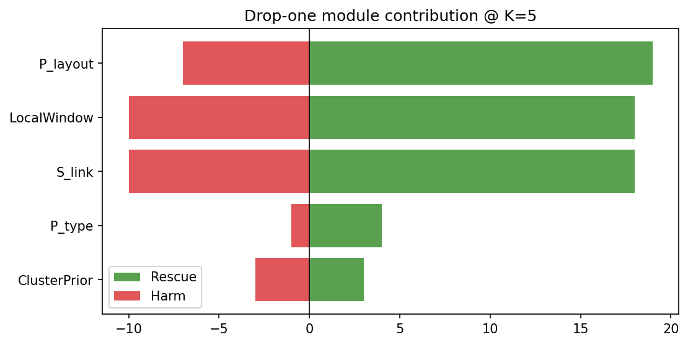
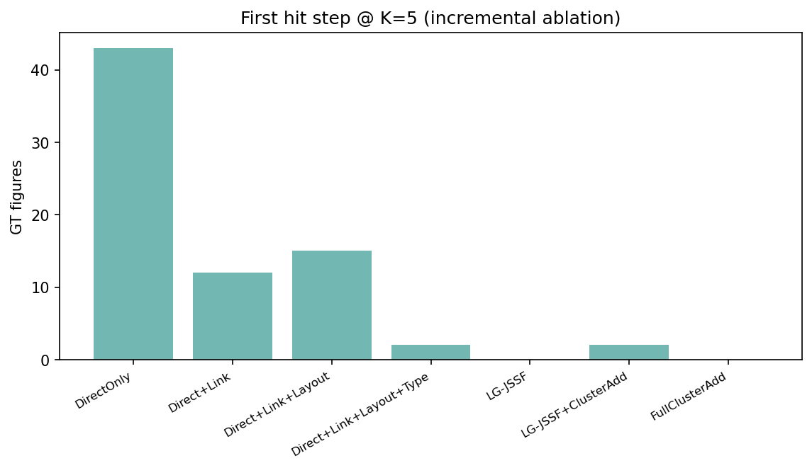
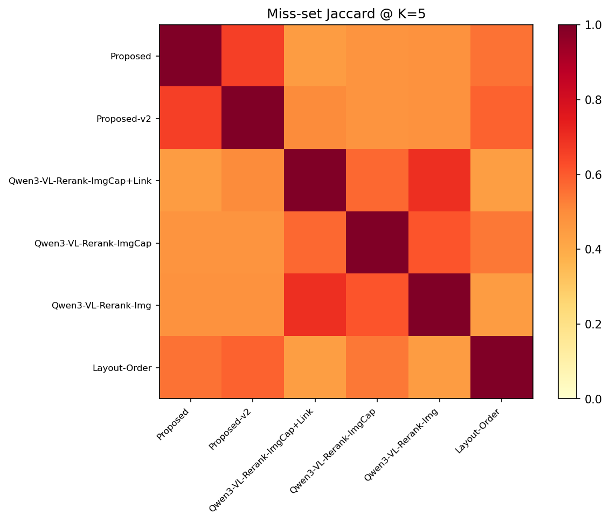
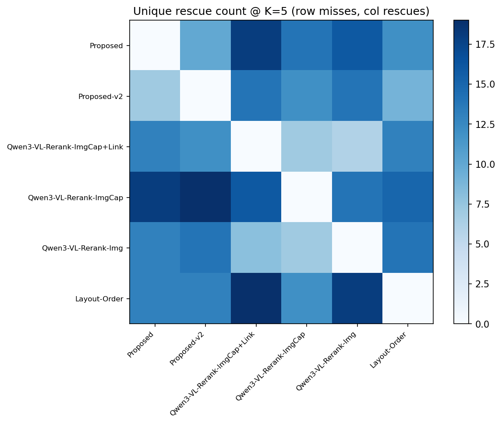
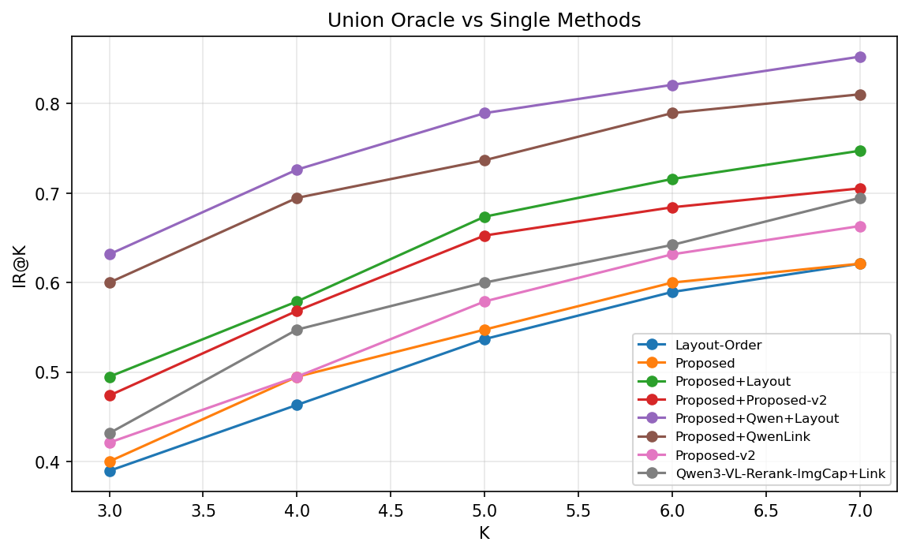
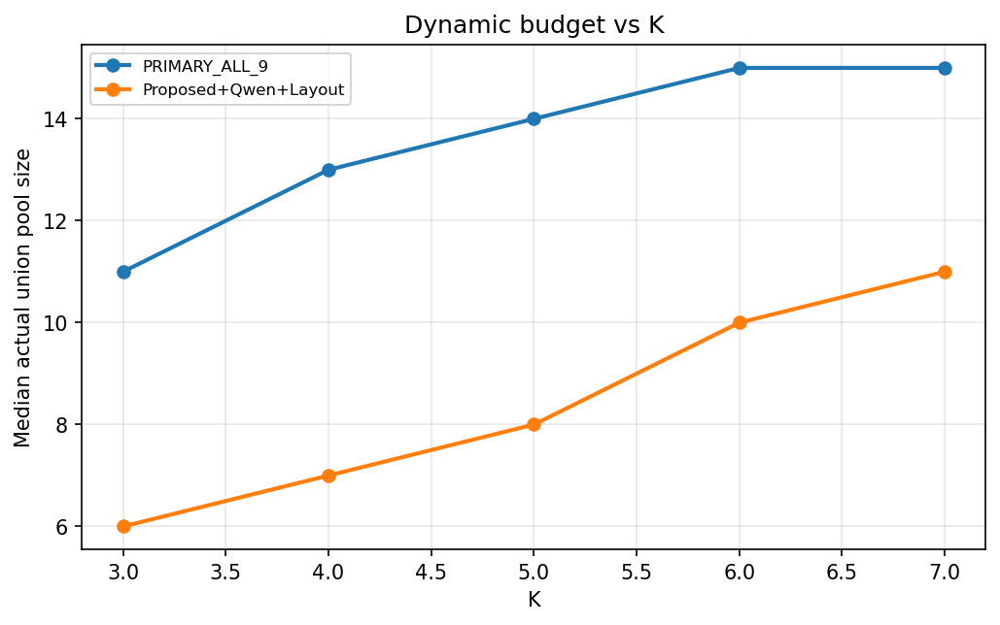
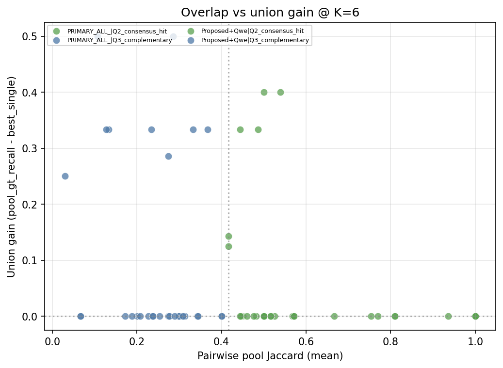
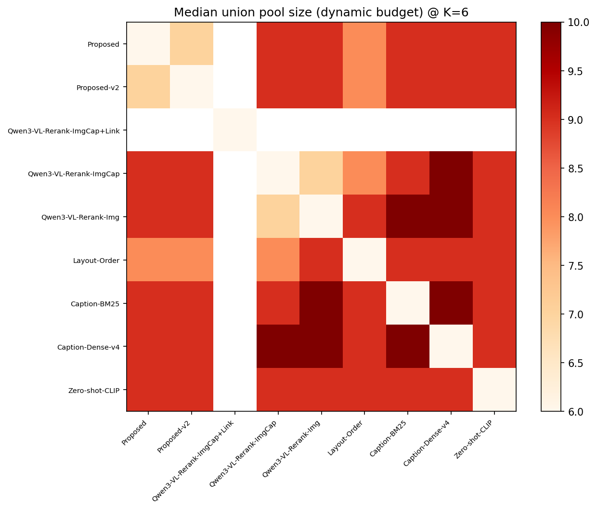
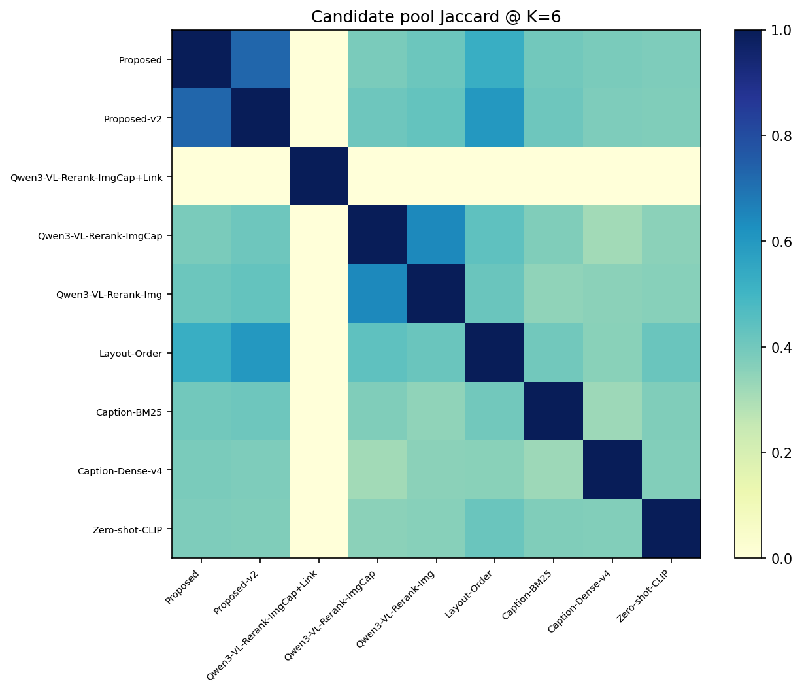
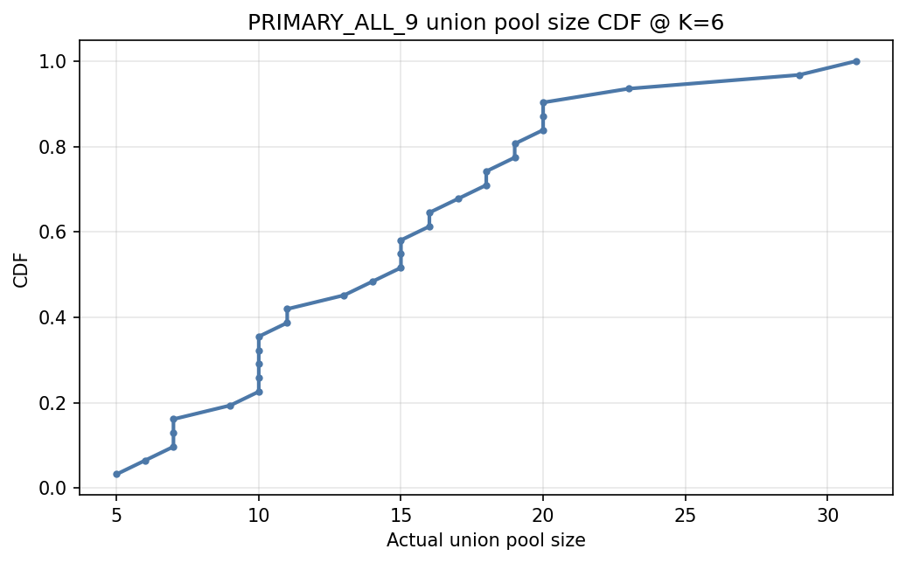
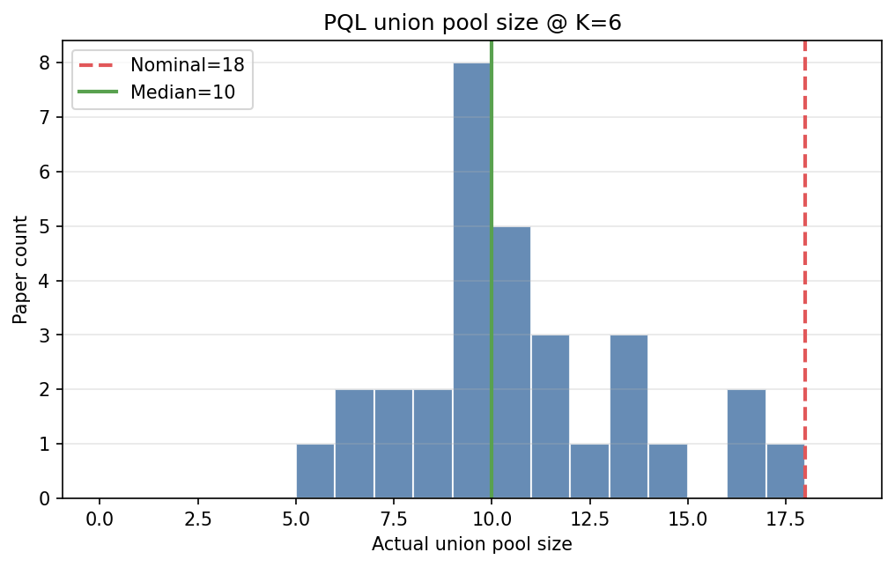